Реализовать эпидемиологическую модель SIR с использованием аппарата сетей Петри, выполнить детерминированное и стохастическое моделирование.
labs/lab06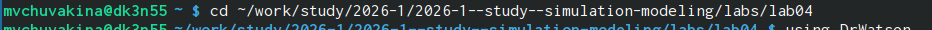
labs/lab06/project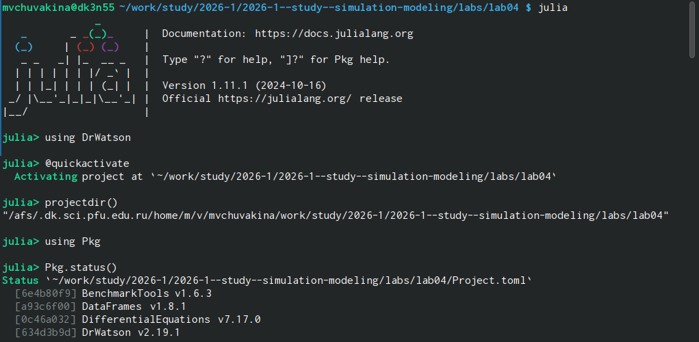
Установлены необходимые пакеты: OrdinaryDiffEq.jl,
Plots.jl, DataFrames.jl, CSV.jl,
Random.jl, LinearAlgebra.jl,
Literate.jl, DrWatson и др.
Проверена установка пакетов
Создан файл src/SIRPetri.jl с определением: - Структуры
PetriNet - Функции build_sir_network(β, γ) -
Функции simulate_deterministic (решение ОДУ) - Функции
simulate_stochastic (алгоритм Гиллеспи) - Функции
plot_sir для визуализации
Созданы и запущены скрипты:
dining_philosophers.jl - Базовый эксперимент
dining_philosophers_animation.jl - Анимация процесса
dining_philosophers_report.jl - Итоговый отчёт
Созданы литературные версии всех скриптов
(*_literate.jl) с подробными Markdown-комментариями.
С помощью scripts/tangle.jl сгенерированы: - Чистый код
в папку scripts/ - Jupyter notebooks в папку
notebooks/ - Quarto-документы в папку
markdown/
Сгенерированы производные форматы для всех литературных скриптов
report.qmd в папке
report/feat(lab06): реализация модели SIR на сетях Петри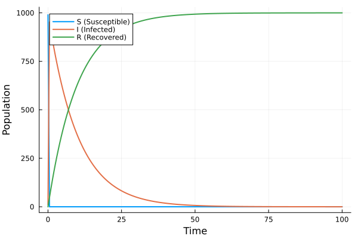
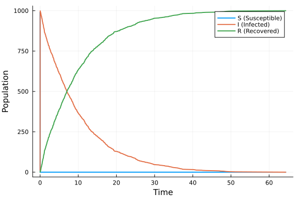
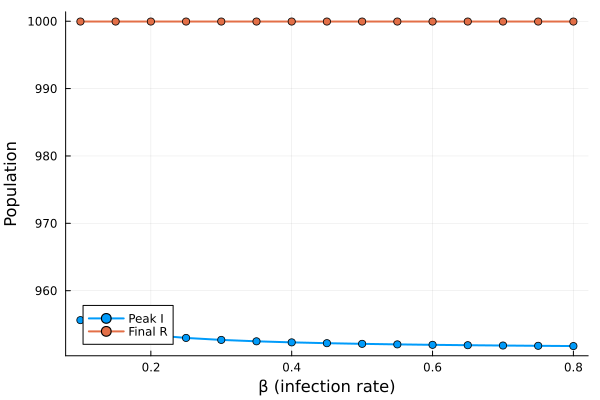
Анализ: При малых β эпидемия не возникает. С ростом β пик заболеваемости резко возрастает.
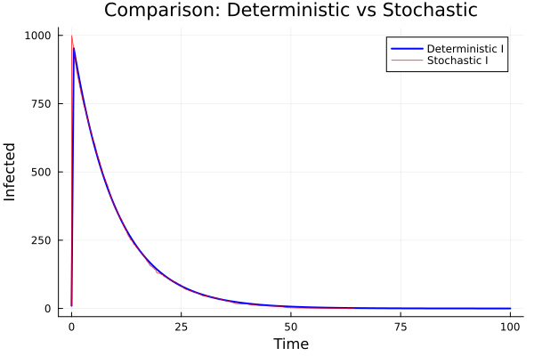
Анализ: Стохастическая кривая имеет флуктуации, но качественно совпадает с детерминированной.
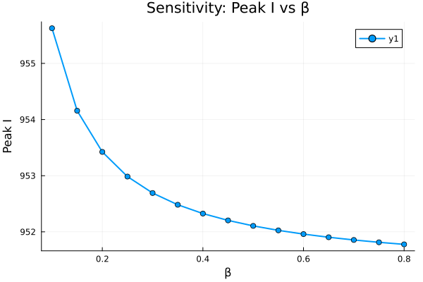
Анализ: Зависимость peak I(β) имеет пороговый характер.
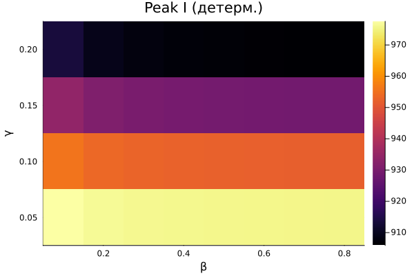
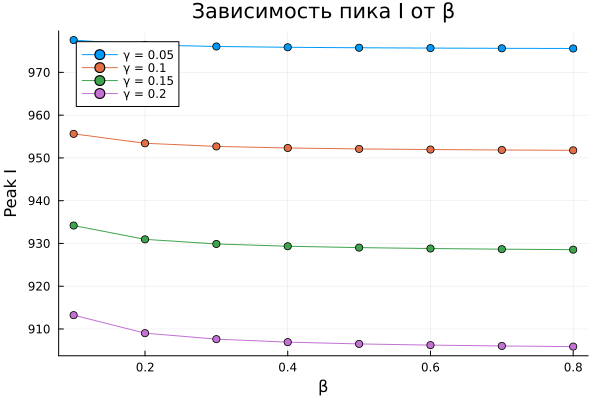
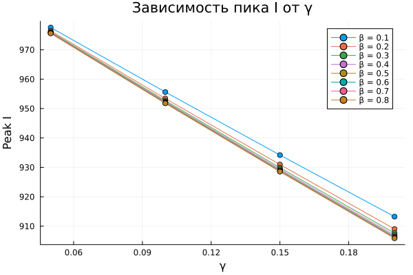
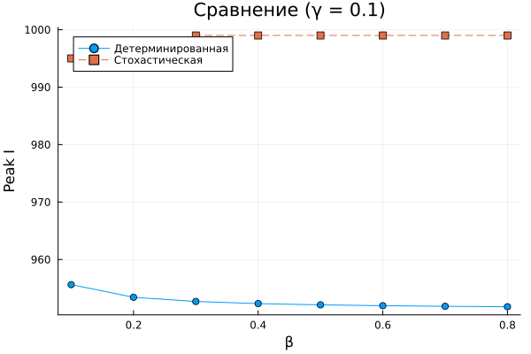
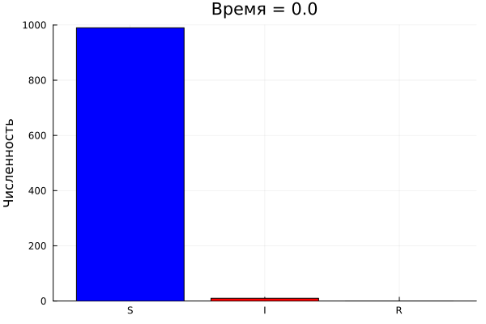
Анимация наглядно показывает: - Рост числа инфицированных в начале эпидемии - Пик заболеваемости - Последующее снижение I и рост R
В ходе выполнения лабораторной работы:
Реализована модель SIR на сетях Петри.
Проведено детерминированное (решение ОДУ) и стохастическое (алгоритм Гиллеспи) моделирование.
Выполнено сканирование параметра β для анализа порогового явления.
Создана анимация динамики эпидемии.
Проведено параметрическое исследование влияния β и γ на динамику.
Освоено литературное программирование с использованием Literate.jl.
Сгенерированы производные форматы: чистый код, Jupyter notebooks, Quarto-документы.
Подготовлен отчёт в форматах PDF и DOCX.
Результаты отправлены на GitVerse.
Работа позволила на практике освоить аппарат сетей Петри для моделирования эпидемиологических процессов и закрепить навыки работы с языком Julia